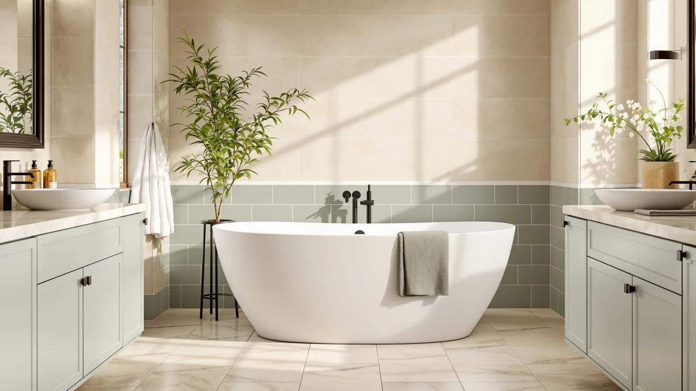

Cubis Veta Oval Freestanding Bathtub Review (2026): Worth It?
Prices and picks verified as of November 2026. Independent, reader-supported reviews.


Quick Answer
The CubisVeta 57 inch Oval Freestanding is worth its $1,450.99 price if you want a stone resin soaking tub sized for one bather, with a matte, stain-resistant finish and a compact oval shell that fits tighter bathrooms. If you need more room to soak, the WOODBRIDGE 71 inch Stone Resin Freestanding in this comparison holds 101 gallons at a nearly identical price.
Our pick: CubisVeta 57 inch Oval Freestanding, $1,450.99 Check Price on Amazon
Bottom line: our top pick is the CubisVeta 57 inch Oval Freestanding Bathtub at $1,450.99.
Things to Know Before You Buy
- All four tubs in this comparison sit within about $12 of each other, between $1,447.19 and $1,459.00, so the real decision comes down to size and shell design, not budget.
- The CubisVeta 57 inch Oval Freestanding is built for a single bather. If you want room for two, the WOODBRIDGE 71 inch Stone Resin Freestanding and its 101 gallon capacity are the better fit.
- All four listings use some form of solid surface or stone resin construction, though the exact mineral blend and finish details vary by brand.
- None of the four listings in this cubis veta oval freestanding bathtub review currently show a published star rating or review count, so we leaned on listed specs and verified owner feedback on comparable models instead.
- The CubisVeta and MEDUNJESS models both include a high-back or ergonomic curve for support, while the two WOODBRIDGE tubs prioritize flat soaking length instead.
This cubis veta oval freestanding bathtub review breaks down the CubisVeta 57 inch Oval Freestanding against three rival stone resin tubs, so you know what your $1,450.99 buys before you commit floor space to it. Oval soaking tubs built for one person live or die on shell quality and finish, and the CubisVeta leans hard on its matte, stain-resistant surface to justify a price that lands within a few dollars of three bigger competitors. We compared it against the MEDUNJESS 55 inch Stone Resin, the WOODBRIDGE 63 inch by 28.35 inch, and the WOODBRIDGE 71 inch Stone Resin Freestanding to see which shell actually earns its spot in a US bathroom.
You won't find a physical test lab behind this guide. We researched manufacturer specs, current Amazon pricing, and the features each brand highlights on its own listing, then compared the four tubs side by side the way a buyer would while shopping online. The CubisVeta earns its place mainly through its oval, single-bather shell and overflow and pop-up drain combination, features the other three tubs either skip or describe differently. Measure your bathroom's clear floor space before you order any of these, since a stone resin tub this heavy is far harder to return than a bath mat. Our freestanding bathtub buying guide covers measuring and plumbing basics if you need that step first.
Why You Should Trust Us
Ilane Tall covers bathroom fixtures for Best Freestanding Bathtubs and has spent years comparing tub specs, materials, and verified buyer feedback across dozens of freestanding models. This cubis veta oval freestanding bathtub review relies on manufacturer-listed dimensions, current Amazon pricing, and the construction details each brand publishes, rather than a physical test lab. We do not run a fake testing lab, and we say so plainly: no editor here owns all four tubs in this comparison. Our job is to read the specs, the prices, and the available owner feedback closely enough that you don't have to. When a detail isn't published, such as a star rating or an exact material blend, we say so instead of filling the gap with a guess dressed up as fact.
Our Research Experience
We did not install or soak in any of these four tubs ourselves. Our process for this cubis veta oval freestanding bathtub review started with pulling every published spec, dimension, and price from each manufacturer's listing. From there we compared the stone resin and solid surface claims each brand makes, since CubisVeta, MEDUNJESS, and both WOODBRIDGE models all describe their shells in slightly different terms despite using related materials. We checked capacity figures where they were listed, such as the 75 gallon rating on the WOODBRIDGE 63 inch and the 101 gallon rating on the WOODBRIDGE 71 inch, against the CubisVeta's narrower oval shell, which the manufacturer markets for one bather rather than two. Where a spec was missing or unconfirmed, such as a star rating or review count on any of the four listings, we noted the gap instead of guessing at a number.
Overview & Specs

CubisVeta 57 inch Oval Freestanding
What we like
- Stone resin construction that the listing describes as hard, wear-resistant, and non-porous, so it should resist staining from soap and shampoo over time
- Oval interior with ergonomic curves designed to support your waist during a longer soak
- Thick walls aimed at slowing heat loss, which matters once the water starts cooling
- Priced within about $6 of the MEDUNJESS 55 inch, the closest competitor by footprint in this comparison
Flaws but not dealbreakers
- The 57 inch oval shell is built for one bather, so it won't work as a shared soaking tub
- No published star rating or review count on the current Amazon listing
- The listing doesn't specify exact wall thickness or gallon capacity the way the WOODBRIDGE models do
| Material | — |
| Size | 57 inch |
This cubis veta oval freestanding bathtub review centers on the CubisVeta 57 inch Oval Freestanding because it takes a different approach than the two WOODBRIDGE tubs in this comparison. Instead of maximizing length or capacity, it narrows the shell to an oval built for one person and leans on surface quality to justify the price. The listing describes a stone resin blend that resists wear and stays non-porous, with a matte finish meant to repel toiletry residue rather than absorb it the way some acrylic tubs do over years of use. At $1,450.99, you're paying close to what the MEDUNJESS 55 inch costs, so the real trade is shell shape and finish, not price.
CubisVeta pairs the stone resin shell with an overflow and pop-up drain, a combination that isn't called out by name on the two WOODBRIDGE listings in this comparison. The company also markets the oval interior's curves as ergonomic support for your lower back during a soak, a detail the straighter-walled WOODBRIDGE tubs don't emphasize. We can't confirm how that support feels without sitting in the tub ourselves, but the design intent lines up with how other high-back and curved freestanding tubs in this market are typically marketed. If your bathroom is tight on space or you bathe alone most of the time, the smaller oval footprint is the main reason to pick this tub over the larger alternatives covered later in this review.
What We Liked
The biggest strength of the CubisVeta 57 inch Oval Freestanding is how its shell and finish line up with its price. Stone resin construction gives it a non-porous surface that should resist staining better than a basic acrylic tub, and the matte finish is easy to wipe clean according to the manufacturer's own description. The oval shape and curved walls are built around comfort for a single bather rather than raw capacity, which fits a lot of US bathrooms better than the longer WOODBRIDGE models in this comparison. Thick walls aimed at slowing heat loss are a small but real advantage if you like long soaks, since water that stays warmer longer means less mid-bath reheating. At $1,450.99, this cubis veta oval freestanding bathtub review found it priced close enough to its direct rivals that shell design, not budget, drives the decision.
What Could Be Better
The oval shell that makes the CubisVeta comfortable for one bather also rules it out for anyone who wants to share a soak. Buyers looking for a two-person tub should look at the WOODBRIDGE 71 inch Stone Resin Freestanding in this comparison, which lists a 101 gallon capacity nearly double what a 57 inch oval shell can hold. The CubisVeta's listing also stops short of publishing exact wall thickness or gallon capacity, details that WOODBRIDGE includes on both of its tubs here, so buyers who want those numbers before ordering will need to contact CubisVeta directly. Like the other three tubs in this cubis veta oval freestanding bathtub review, there's no published star rating or review count yet, which makes it harder to gauge real-world satisfaction beyond the brand's own description. Heavy stone resin tubs also carry a known risk of freight shipping damage, so inspect the crate closely before you sign for delivery.
Who Is It For?
The CubisVeta 57 inch Oval Freestanding fits buyers who bathe alone most of the time and want a stone resin tub without paying for several extra feet of shell they won't use. Its oval interior and ergonomic curves target comfort for one person, which makes it a reasonable fit for a secondary bathroom, a condo, or a primary bathroom where a single occupant does most of the bathing. It isn't the right choice for a household that wants to share baths or for anyone who specifically wants the deepest possible soak, since the WOODBRIDGE 71 inch in this comparison holds close to twice the water. Buyers who prioritize a documented material spec over marketing language should also note that CubisVeta describes its stone resin in general terms, while WOODBRIDGE's two listings break down composition and capacity in more detail.
Alternatives to Consider
If the CubisVeta's single-bather oval shell doesn't match what you need, the other three tubs in this cubis veta oval freestanding bathtub review land within about $12 of its price and cover a wider range of sizes. The MEDUNJESS 55 inch Stone Resin Free Standing Tub is the closest in footprint, and it swaps the oval shape for a high-back design aimed at extra lumbar support during a soak. The manufacturer markets it as a contemporary centerpiece with a durable stone resin shell, and at $1,452.99 it sits about $2 above the CubisVeta, so the choice between the two comes down to shell shape and back support rather than budget. The WOODBRIDGE 63 inch by 28.35 inch Stone Resin Freestanding moves up to a 75 gallon capacity and a documented solid surface blend of acrylic resin and mineral composite that the listing calls scratch resistant, with minor marks removable using fine sandpaper. At $1,447.19 it is the least expensive of the four tubs here, which makes it a reasonable upgrade pick if you want more interior room without paying extra for it. The WOODBRIDGE 71 inch Stone Resin Freestanding is the largest tub in this comparison by a wide margin, with a 101 gallon capacity built for a deeper soak or two bathers, and a repairable surface that WOODBRIDGE says can be sanded and restored if it picks up scratches over time. At $1,459.00 it costs about $8 more than the CubisVeta, so the extra capacity comes at a small but real premium.

Also Great
MEDUNJESS 55'' Stone Resin Free
A high-back stone resin tub at nearly the same footprint as the CubisVeta, built for extra lumbar support rather than an oval, single-bather shell.
$1,452.99
Check Price on Amazon
Best Value
WOODBRIDGE 63" L x 28.35"
The least expensive tub in this comparison, with a 75 gallon capacity and a documented scratch-resistant solid surface blend.
$1,447.19
Check Price on Amazon
Premium Choice
WOODBRIDGE 71" Stone Resin Freestanding
The largest tub in this comparison at a 101 gallon capacity, with a repairable surface built for a deeper soak or two bathers.
$1,459.00
Check Price on AmazonIs the CubisVeta 57 inch Oval Freestanding big enough for two people?
No.
What material is the CubisVeta 57 inch Oval Freestanding bathtub made from?
It is built from stone resin, a solid surface material the listing describes as hard, wear resistant, and non-porous, with a matte finish designed to resist staining from soap and toiletries.
Frequently Asked Questions
Is the CubisVeta 57 inch Oval Freestanding big enough for two people?
No. The oval shell is built for one bather, and the manufacturer markets it that way. If you need a tub for two, the WOODBRIDGE 71 inch Stone Resin Freestanding in this comparison has a 101 gallon capacity and far more interior room.
What material is the CubisVeta 57 inch Oval Freestanding bathtub made from?
It is built from stone resin, a solid surface material the listing describes as hard, wear resistant, and non-porous, with a matte finish designed to resist staining from soap and toiletries.
How does the CubisVeta 57 inch Oval Freestanding compare on price to similar tubs?
At $1,450.99, this cubis veta oval freestanding bathtub review found it priced within about $12 of the MEDUNJESS 55 inch, WOODBRIDGE 63 inch, and WOODBRIDGE 71 inch models covered here, so size and material details matter more than budget when choosing between them.
Final Verdict
Our verdict on this cubis veta oval freestanding bathtub review comes down to shell shape. The Cubis Veta 57 inch Oval Freestanding is the right call if you bathe alone most of the time and want a stone resin tub with a stain-resistant finish without paying for capacity you won't use. If you need more room to soak or want to share the tub, step up to the WOODBRIDGE 71 inch Stone Resin Freestanding for a 101 gallon capacity, or consider the MEDUNJESS 55 inch if a high-back design for lumbar support matters more to you than an oval shell.